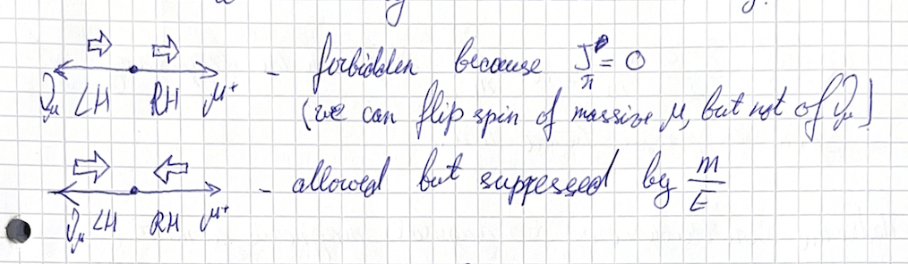
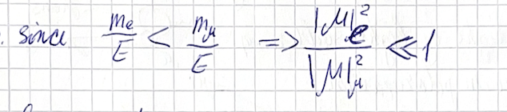
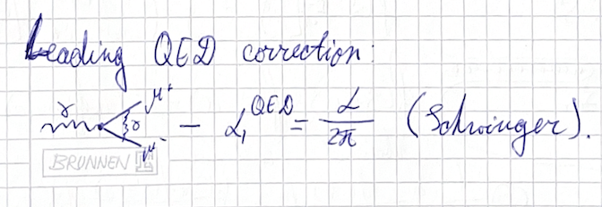
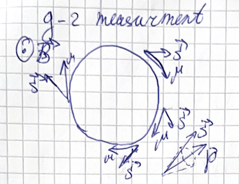
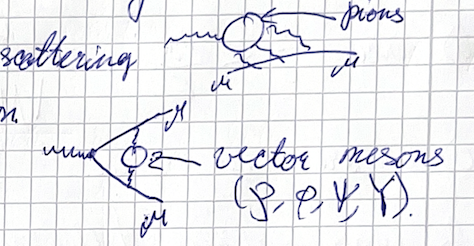
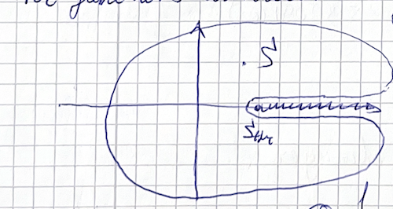

(2024) Lecture 12
Presenter: Mikhail Mikhasenko
Note Taker: Ilya Segal
1 Planning the Final Lectures: From Physics to Meta Issues
We are finishing the lecture cycle. Two more lectures remain. Today is the month before last. Content-wise, today will focus on physics, while next week we will discuss meta issues and how the hadron community functions:
- How research is structured in the field
- How collaborations work
- What is aesthetic — how scientists actually work in hadron physics
Next week there will be less physics. I will spend the first 20 minutes reviewing recent discoveries, what experiments brought up, and what the community is currently up to.
Today I want to talk about physics, still write formulas, and discuss how hadron physics is used outside of hadron physics — it is an important part of many other studies. I considered two possible topics:
| Topic | Why considered | Decision |
|---|---|---|
| CP violation | Hadron physics is an important part through which CP violation shows up. | Not chosen |
| Muon g-2 and hadronic contributions to the magnetic moment of the muon | Fundamental piece; touches on subjects already discussed. | Chosen |
The exercise sheet is on the R ratio. I thought of giving it earlier and decided to postpone; now we enhance it with more problems based on the knowledge you now have. We will discuss everything at an advanced level, giving all the knowledge we have.
The magnetic moment of a particle is given by
\vec{\mu}=\frac{e}{2m}\,g\,\vec{S},\qquad g=2
for a Dirac particle. The anomalous magnetic moment is defined as
a_{\mu}\equiv\frac{g-2}{2}=0.001165\,8209(63)
with the leading QED contribution
a_{\mu}^{\text{QED}}=\frac{\alpha}{2\pi}.
The experimental measurement uses the cyclotron frequency \omega_c and spin precession frequency \omega_s in a magnetic field:
\omega_{c}=\frac{eB}{m\gamma},\qquad \omega_{s}= \frac{g eB}{2m} +(1-\delta)\,\frac{eB}{m}
The difference yields
\omega_{g}-\omega_{c}=a_{\mu}\,\frac{eB}{m}.
The hadronic contribution to a_{\mu} is obtained via a dispersion integral over the R ratio:
a_{\text{HVP}}=\left(\frac{\alpha\,m_{\mu}}{3\pi}\right)^{2}\int_{s_{\text{th}}}^{\infty}\frac{ds'}{s'}\,K(s')\,R(s')
This uses the dispersion relation
g(s)=g(a)+\frac{s-a}{\pi}\int_{s_{\text{th}}}^{\infty}\frac{\operatorname{Im}g(s')\,ds'}{(s'-a)(s'-s)}.
The exercise sheet on the R ratio has been postponed and now includes additional problems that build on the material you have already covered.
2 Pion Decay: Chirality, Helicity, and Parity Violation
2.0.1 Recap: Pion Decay and Chirality
We begin with a short recap of helicity and chirality in the context of the weak decay of a charged pion.

The two decays considered are:
\pi^{+}\longrightarrow \mu^{+}\,\nu_{\mu}, \qquad \pi^{+}\longrightarrow e^{+}\,\nu_{e}
Step 1: Draw the two‑body decay in the rest frame of the pion. Indicate the momenta and the chirality of the final‑state particles. The vertex is a weak interaction, so the produced particles emerge with definite chiralities: the antilepton (muon or positron) is right‑handed, and the neutrino is left‑handed.
Step 2: Relate chirality to helicity. Chirality is linked to the spin orientation in the high‑mass limit. For a massive particle like the muon or electron, the “wrong” helicity component (the one opposite to the chirality) is suppressed by a factor m/E . For the massless neutrino, only the left‑handed component exists — the right‑handed component is absent.
Step 3: Analyze angular momentum conservation. In the center‑of‑mass frame the momenta are back‑to‑back. Consider the “naive” chiral configuration: the antilepton (muon or positron) is right‑handed, the neutrino is left‑handed. For a right‑handed particle, the spin is aligned with its momentum (helicity +1/2 ). For a left‑handed particle, the spin is opposite to its momentum (helicity -1/2 ). However, note that the decay axis is defined along the antilepton momentum. The antilepton’s spin projection is +1/2 . The neutrino moves in the opposite direction; its helicity is -1/2 , but that means its spin points along the antilepton direction, so its spin projection onto the decay axis is also +1/2 . Thus the total spin projection along the decay axis is 1 , which is impossible for a spin‑0 pion. Hence this configuration is forbidden by angular momentum conservation.
The allowed configuration requires flipping the antilepton’s helicity (making it left‑handed along its flight direction), which is suppressed by a factor m/E .

The neutrino cannot flip its helicity because it is massless. Therefore the decay proceeds via the suppressed helicity component of the antilepton. The suppression is larger for the electron than for the muon because m_e \ll m_\mu .
Step 4: Compare matrix elements. The matrix element for the electron channel is suppressed relative to the muon channel because the lighter the fermion, the larger the helicity suppression:
\frac{m_{e}}{E}<\frac{m_{\mu}}{E}\;\Longrightarrow\; \frac{|\mathcal{M}_{e}|^{2}}{|\mathcal{M}_{\mu}|^{2}}\ll1
Step 5: Compare phase space. Phase space for a two‑body decay is
\Phi =\frac{1}{8\pi}\,\frac{2p}{\sqrt{s}},
where p is the momentum of one final particle in the center‑of‑mass frame. The ratio of phase spaces for the two decays is
\frac{\Phi(\,e^{+}\nu_{e})}{\Phi(\,\mu^{+}\nu_{\mu})} =\frac{\lambda^{1/2}(s,m_{e}^{2},0)}{\lambda^{1/2}(s,m_{\mu}^{2},0)} =\frac{s-m_{e}^{2}}{s-m_{\mu}^{2}}>1.
The electron channel has greater phase space because the mass release (and hence the kinetic energy) is larger. However, this factor is not enough to overcome the helicity suppression of the matrix element.
Step 6: Conclusion. The dominant decay of the charged pion is to a muon and a neutrino:
\pi^{+} \to \mu^{+}\nu_{\mu}
This result is a cornerstone of parity violation in the weak interaction. The V-A structure of the weak vertex ( \gamma^{\mu}(1-\gamma^5) ) is responsible for the chiral selection rules.
2.0.2 Muon Polarization and Self‑Analysis
An intriguing consequence: In the decay \pi^{+}\to\mu^{+}\nu_{\mu} , the muon is produced polarized (its spin is aligned along the direction of flight). The neutrino, not detected, carries away the opposite spin.
The muon is a self‑analyzing particle. It decays via
\mu^{+} \to e^{+} \nu_{e} \bar{\nu}_{\mu},
and the angular distribution of the emitted positron in the muon’s rest frame reveals the muon’s polarization.
| Muon polarization | Positron angular distribution in muon rest frame |
|---|---|
| Unpolarized | Isotropic |
| Fully polarized (longitudinal) | Forward direction (aligned with muon spin) preferred |
In the so‑called KTG frame, the positron preferentially emerges along the direction of the muon spin. This holds even after integrating over true energies, and it was a key measurement in the discovery of parity violation.
In 1967 an experiment initially gave a wrong result for the muon polarization; it was later corrected.
3 The Muon’s Anomalous Magnetic Moment
The same technique used to measure the proton’s magnetic moment was subsequently applied to the muon. #### Proton magnetic moment review
The magnetic moment of a point‑like fermion is given by
\vec{\mu} = \frac{e}{2m}g\,\vec{S},\qquad g=2\ \text{(Dirac pointlike)}.
For the proton the measured g is 2.8, not 2, indicating that the proton is not point‑like but is made of quarks. Using the quark model with constituent quark masses (e.g., 0.3 GeV for u and d quarks) and their fractional charges, the computed value roughly agrees with the experimental result.
3.0.1 Muon anomalous magnetic moment
The muon is an elementary particle with no internal structure. At lowest order g=2 , but quantum corrections modify it. The anomalous magnetic moment is defined as

a_{\mu} \equiv \frac{g-2}{2},
with the measured value
a_{\mu} = 0.0011658209(63).
Such precision is rare and gives sensitivity to loop effects and potential new physics. The corrections arise from quantum processes analogous to the proton form factor. g characterises the photon–muon interaction; if the muon were composite one would resolve its constituents. Instead, loop corrections to the vertex are probed.
The first QED loop calculation, by Schwinger, gave
a_{\mu}^{\text{QED}} = \frac{\alpha}{2\pi}.
QED is a perturbative theory; the series converges. Higher orders are computed up to \alpha^5 . At fifth order the many diagrams are evaluated with computers, as no one can draw them by hand as Schwinger did.
3.0.2 Experimental measurement of g-2

The experiment uses a storage ring. Pions are produced by hitting a target with a proton beam. They are directed toward the ring; on the way they decay, producing muons. The muons are trapped in the ring (radius ≈ 20 m) by a magnetic field.
| Quantity | Formula |
|---|---|
| Cyclotron frequency | \displaystyle \omega_c = \frac{eB}{m\gamma} |
| Spin‑precession frequency | \displaystyle \omega_s = \frac{g eB}{2m} + (1-\delta)\frac{eB}{m} |
| Difference (proportional to a_\mu ) | \displaystyle \omega_s - \omega_c = a_{\mu}\,\frac{eB}{m} |
If \omega_s = \omega_c , the spin would stay aligned with the momentum. Because they differ, the spin direction rotates relative to the momentum; the tilt after one revolution is proportional to a_\mu .
Muons from pion decay are strongly polarized because the weak decay vertex has a definite chirality. Inside the ring they decay to electrons and neutrinos. The decay electrons are detected by lead‑glass calorimeters. Lead glass is doped with lead, giving a high atomic number Z ; it is transparent, so a photosensor collects the light from the deposited energy. The rate of electrons depends on the spin orientation: more electrons are emitted when the spin points inward, fewer when it points outward. The detected energy therefore shows an exponential decay from the muon lifetime, modulated by the spin‑precession frequency.
3.0.3 Data analysis
The signal is recorded as time (x‑axis) versus energy deposit (y‑axis). The cyclotron frequency \omega_c remains constant. After three years of statistics, a_\mu is extracted. The analysis was blinded: before finalising the data, analysts wrote the real frequency on a piece of paper and sealed it in an envelope. At the press conference the envelope was opened, the real frequency was typed in, and the plot was unblinded.
3.0.4 Uncertainties and future
The experiment was first performed at Brookhaven National Laboratory; the next generation is now underway at Fermilab. The most critical concern is homogeneity of the magnetic field – any inhomogeneity introduces uncertainty into the integral over the field that the muon experiences.
| Source | Uncertainty (ppb) |
|---|---|
| Experimental | 63 |
| Theoretical (QED + electroweak + hadronic) | ~100 |
The theoretical calculation includes not only QED corrections but also electroweak and hadronic contributions.
4 Hadronic Contributions to the Muon Anomalous Magnetic Moment
The anomalous magnetic moment a_{\mu}\equiv(g-2)/2 receives two prominent hadronic contributions: hadronic vacuum polarization (HVP) and hadronic light‑by‑light (HLbL). (see Figure 3) (see Figure 4)

4.1 Hadronic vacuum polarization (HVP)
In the HVP diagram, a photon produces hadrons which then reconvert into a photon. The hadronic blob contains all possible hadronic states with the same quantum numbers as the photon.
4.2 Hadronic light‑by‑light (HLbL)
It is actually nicer than a boring logarithm. In the HLbL process, light comes in, light goes out, and inside the hadronic blob there are hadrons and another photon. All mesons that couple to photons and can decay to two photons contribute. The most prominent is the \pi^0 ; the \eta and some scalar mesons also contribute.
4.3 Quantum numbers
The electromagnetic current does not change quantum numbers, so the hadronic states must have the same J^{PC} as the photon. The photon has J^P = 1^{-} and negative charge conjugation, hence J^{PC} = 1^{--} .
Q: Give an example of a meson with J^{PC}=1^{--} . A: A vector meson – spin one, vector. For example, the \rho meson.
The \rho is u\bar{u} - d\bar{d} . Replacing the u quarks with c gives the J/\psi , with s quarks gives \phi ( s\bar{s} ), and with b quarks gives \Upsilon ( b\bar{b} ). The K^* would be a vector in the kaon sector, but it has non‑zero flavor ( u\bar{s} ) and the photon cannot produce u\bar{s} – neutral flavor is required.
These are the main particles giving the largest contribution. More than 50% comes from the \rho .
| Meson | Quark content | Role |
|---|---|---|
| \rho | u\bar{u} - d\bar{d} | Dominant contribution (>50%) |
| J/\psi | c\bar{c} | Charmonium vector |
| \phi | s\bar{s} | Strangonium vector |
| \Upsilon | b\bar{b} | Bottomonium vector |
| K^* | u\bar{s} | Not neutral flavor → not produced by photon |
4.4 Computing the HVP contribution
Hadronic physics cannot be calculated from first principles. For HVP, we use information from e^+e^{-}\to\text{hadrons} because the quantum numbers are the same ( J^{PC}=1^{--} ). Using unitarity, we relate the photon‑hadron transition to the e^+e^{-} cross section – a mixed theoretical‑experimental evaluation.
The expression is:
a_{\mu}^{\text{HVP}} = \left(\frac{\alpha\,m_{\mu}}{3\pi}\right)^2 \int_{s_{\text{th}}}^{\infty} \frac{ds'}{s'}\,K(s')\,R(s')
where \alpha is the fine‑structure constant, m_{\mu} the muon mass, K(s) a kernel function (a combination of logarithms and rational functions; if the particles were scalars, K(s)=1 ), and R(s) the experimental ratio R(s)=\sigma(e^+e^{-}\to\text{hadrons})/\sigma(e^+e^{-}\to\mu^{+}\mu^{-}) . The integral starts at the hadron production threshold.
The loop is cut to see which particles can be produced on shell inside the hadronic vacuum polarization blob. The lowest threshold is the lightest hadrons – quarks cannot be on shell. Two pions are the lightest, so we integrate from the two‑pion threshold. These two pions must have non‑trivial orbital angular momentum to give J^{PC}=1^{--} (an S‑wave would give J^P=0^+ ; adding L=1 gives J^P=1^{-} ). The requirement of orbital angular momentum will become familiar when we integrate from threshold to infinity with a 1/s^{n} denominator. This motivates the use of a dispersion relation:
f(s) = \frac{1}{\pi}\int_{s_{\text{th}}}^{\infty} \frac{\operatorname{Im}f(s'+i0)}{s'-s}\,ds'
In the 1S multiplet of the quark model, the two states are J^{PC}=0^{-+} and J^{PC}=1^{--} . The 1^{--} state is the vector meson. A typical plot has quantum numbers on the x‑axis and mass on the y‑axis.
5 Dispersion Relations and Real Analyticity
5.1 Cauchy Theorem and Integral Representation
The Cauchy theorem states that in the complex plane, integrating a function in its domain of analyticity yields 2\pi i times the sum of the residues at its poles. This result may look familiar: we discussed it already — you can use it to obtain an integral representation for any function in its domain of analyticity. By manually introducing a pole, the integral equals the residue:
f(s)=\frac{1}{2\pi i}\oint\frac{f(s')}{s'-s}\,ds'.
The integrand has a pole at s'=s ; the residue gives f(s) . This is a direct consequence of the Cauchy theorem.
5.2 Applying the Representation to a Function with a Cut
Now consider functions that are real analytic in a domain below a cut, where the cut starts at a threshold. We write a similar representation for a contour C :
G(s)=\frac{1}{2\pi i}\oint_C\frac{G(s')}{s'-s}\,ds'.
We then “blow up” the contour. Changing the contour does not alter the integral. The only singularities encountered are the pole introduced by hand and the cut. By deforming the plane, we transform the contour into one that goes around the cut. The resulting integral has two contributions:
- the large circle (often vanishes if the function falls off fast enough),
- the cut itself, evaluated along the real axis.
Along the cut we use the properties of G(s+i\varepsilon) and G(s-i\varepsilon) because of real analyticity.
5.3 Real Analyticity: An Example
Any function with a cut that is real analytic must be real below the threshold. A favorite example is \sqrt{1-x} . It has a cut starting at x=1 to the right. At x=0 the function evaluates to 1 without problem. For negative x (e.g., x=-8 ) the argument is 9 and the square root is real, confirming real analyticity. For x>1 the function acquires an imaginary part.
Check at x=5 :
| s | G(s) | Real part | Imaginary part |
|---|---|---|---|
| 5+i0 | \sqrt{-4-i0}=2i | 0 | +2 |
| 5-i0 | \sqrt{-4+i0}=-2i | 0 | -2 |
Above and below the cut, the real parts are identical (zero) and the imaginary parts are opposite. This is real analyticity: the function is real below the cut; above the cut, the imaginary parts appear with opposite signs on the two sides.
5.4 From Discontinuity to Dispersion Relation
Using the behavior above and below the cut, we rewrite the cut integral in terms of the discontinuity. When we reverse the direction of integration along the cut we pick up a minus sign. If the function falls off fast enough at infinity, the large‑circle contribution vanishes. Incorporating the factor of 2i from the discontinuity,
\operatorname{Im}G = \frac{G_{\text{above}} - G_{\text{below}}}{2i},
we obtain the dispersion relation:
G(s)=\frac{1}{\pi}\int_{s_{\text{th}}}^{\infty}\frac{\operatorname{Im}G(s'+i0)}{s'-s}\,ds'.
This relation recovers the full function from its imaginary part — a remarkable and powerful tool. Using it we can obtain the value of the function anywhere in the complex plane. Although it is an advanced topic in dispersion relations, it is part of the classwork. Working through this exercise helps understand how dispersion works.
5.5 Subtracted Dispersion Relations
Often the function does not decrease fast enough for the unsubtracted relation to converge. In that case we need a subtracted dispersion relation (also called a Hilbert relation with one subtraction). We introduce two poles:
g(s)=g(a)+\frac{s-a}{\pi}\int_{s_{\text{th}}}^{\infty}\frac{\operatorname{Im}g(s')\,ds'}{(s'-a)(s'-s)}.
The term vanishes when s=a . This is a once‑subtracted dispersion relation. The easiest choice is to subtract at a=0 :
g(s)=g(0)+\frac{s}{\pi}\int_{s_{\text{th}}}^{\infty}\frac{\operatorname{Im}g(s')\,ds'}{s'(s'-s)}.
Subtraction becomes necessary when the condition for the large circle is not met, i.e., when the function does not fall off fast enough. One can perform one subtraction, or two subtractions (with (s-a)^2 and an additional factor in the integral).
5.5.1 Example: \sqrt{1-s}
For G(s)=\sqrt{1-s} the once‑subtracted dispersion relation (with a=0 ) reads
\sqrt{1-s}=1+\frac{s}{\pi}\int_{1}^{\infty}\frac{\operatorname{Im}\sqrt{1-s'}\,ds'}{s'(s'-s)}.
For s'>1 , \operatorname{Im}\sqrt{1-s'} = \sqrt{s'-1} . The integral can be evaluated explicitly; it yields a hyperbola. Mathematically it works because we started with an analytic function.
5.6 Key Idea
Analyticity can only introduce an imaginary part consistently from both sides of the cut. The function is real below the threshold; above the threshold the imaginary part appears with opposite signs on the two sides.
6 The R Ratio and Its Relation to the Cross Section
The imaginary part of the polarization function is related to the cross section through the optical theorem. This cross section is the imaginary part; we put it into the numerator, perform a dispersive integral, and obtain the contribution.
Observables are given by the cross section. It probably now makes more sense why we start at the threshold: the global function in the parametrization is analytic and has only the right‑hand cut. Its analytic properties are:

| Region | Property |
|---|---|
| Below threshold | Real analytic, no imaginary part |
| Above threshold | Develops an imaginary part (the cross section) |
We compute the polarization via a dispersion relation and then relate it to the cross section.
The quantity R is defined as
R(s) = \frac{\sigma(e^{+}e^{-}\to\text{hadrons})}{\sigma_{0}(e^{+}e^{-}\to\mu^{+}\mu^{-})}.
The denominator is the tree‑level e^{+}e^{-}\to\mu^{+}\mu^{-} cross section, so this is not an experimental measurement. However, the R ratio is very close to what we measure in experiment.
The exercise sheet gives the small differences between R and the actual measured quantity that you need to realize.
The R ratio shows all the resonances that can appear. The experimental measurement of R is quite spectacular. It has contributions from the:
- \rho resonance
- \phi resonance
- \Upsilon resonance
- A background
The resonances sit on top of a background, which comes from whatever hadronic contributions can be produced — quarks that hadronize into many pions (not just one or two pions) — and all the other modes needed to evaluate this contribution.
7 The Shrinking Five Sigma Anomaly in the Muon g-2
7.1 Current Status of the Muon g-2 Anomaly (see Figure 4)
There is a ~5 σ discrepancy between theory and experimental measurement of a_\mu . This mismatch has persisted for 2–3 years, though the significance was larger before some recent issues came to light. It initially indicated new physics.
Theory (using the dispersive technique) and experiment each achieve about 60 ppb precision; comparing the two shows a gap of about 5 σ.
a_\mu \equiv \frac{g-2}{2} = 0.001165\,8209(63)
7.2 Two Works That Weakened the Anomaly (see Figure 3) (see Figure 5) (see Figure 6)
1. Lattice QCD Calculation of the Hadronic Vacuum Polarization (HVP)
| Aspect | Description |
|---|---|
| Domain | Time domain (instead of Q^2 space) – a valid transformation relates the two. |
| Result | Disagrees with the phenomenological calculation (which uses spectral integrals). |
| Impact if taken | The 5 σ gap shrinks to 1.8 σ. |
The phenomenological HVP is not purely theoretical – it uses experimental input from the R ratio:
a_{\mathrm{HVP}} = \left(\frac{\alpha m_\mu}{3\pi}\right)^2 \int_{s_{\mathrm{th}}}^{\infty} \frac{ds'}{s'}\, K(s')\, R(s'), \qquad R(s) = \frac{\sigma(e^+e^-\to\mathrm{hadrons})}{\sigma_0(e^+e^-\to\mu^+\mu^-)}
The R ratio has large uncertainties, especially in the region between the \rho and \phi mesons because experimental data there are sparse. This region is blamed for the discrepancy between lattice and phenomenological calculations.
2. CMD-3 Experiment (Novosibirsk, 2024)
A new measurement of the \rho\!-\!\phi region is inconsistent with all past experiments, but if used, it makes the experimental a_\mu value consistent with the experimental value of a_\mu . The evidence for new physics is getting weaker, but the situation remains a puzzle.
Experimental efforts (new facilities) and theoretical/methodological work (improving hadronic calculations) are ongoing. Hadronic physics remains the main obstacle to deciding whether a real mismatch exists.
7.3 Personal Clarification from the Professor
When fitting oscillations in the g-2 experiment, one extracts \omega_g - \omega_c (the difference between the spin-precession and cyclotron frequencies) rather than g-2 directly. The professor will check this with colleagues, noting that some published vacuum‑polarization expressions appear to contain typos.
7.4 Student Q&A
Q: Why can’t we be sure that the main contributions are hadronic? The hadronic contributions being evaluated are the largest, but all the others we can evaluate are just smaller.
A: Excellent point – I misspoke. The hadronic contributions are not the largest; they are small. But they carry the leading uncertainty because we do not know them well enough to further reduce the error. The uncertainty was about 600 ppb and has been reduced to 200 – 100 ppb thanks to new work, but the hadronic part remains the dominant source of error.
The hadronic light‑by‑light (HLbL) part is the most difficult: it involves virtual photons whose Q^2 ‑dependence is tricky, and its calculation includes 64 terms. We know the other contributions (e.g., QED, electroweak) much more precisely.